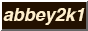
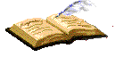
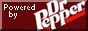

hello! my name is abbey, and welcome to my little corner of the world wide web. this site is meant to be my own personal space to escape from the dredge of the greater, more popular internet spaces to protect my sanity. this site is not always in active development because i have crippling ADHD, so this site might not always be up to date. but as this is meant to be a reflection of my own self, i would say it's quite accurate lol.
this site is maintained through Github Pages, coded with my own two paws, and is intended to be viewed on desktop at resolutions 800x600 or greater. i currently edit this site on a Lenovo ThinkPad T14 Gen 2 laptop, with (currently) Windows 11 using Notepad++. you can learn more about me on my about me page. thank you for visiting, and enjoy your stay! ❤︎


its funny how last time i updated my page almost a year ago, i was listening to a lot of bruno mars. 8 months later, yup, still am lol.
